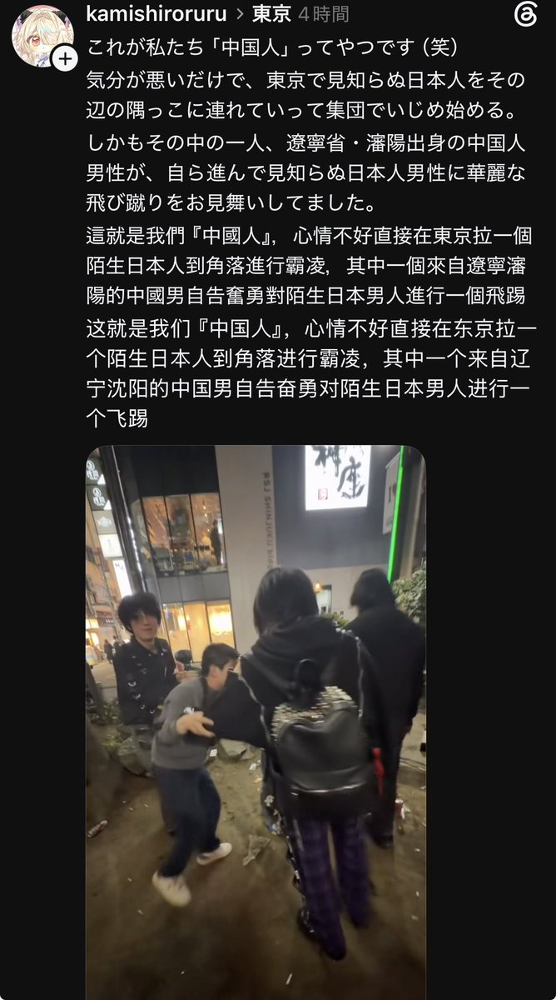

超级伊伊伊万#忒伊亚
@ivan20221126
满洲支钠🐖哎呀我滴妈这小味儿

しもべ
@ryujin_ari9
東京で、普通に歩いてただけなのに中国人らに囲まれて脅迫、挙げ句の果てに飛び蹴り……これ、マジでヤバくない？💥
いや、これを「ただの憂さ晴らし」で済ませていいわけないだろ。
普通に街を歩いていただけなのに、突然囲まれて脅されたり、暴力を振るわれたりする👊 https://t.co/IrwClcCY0e